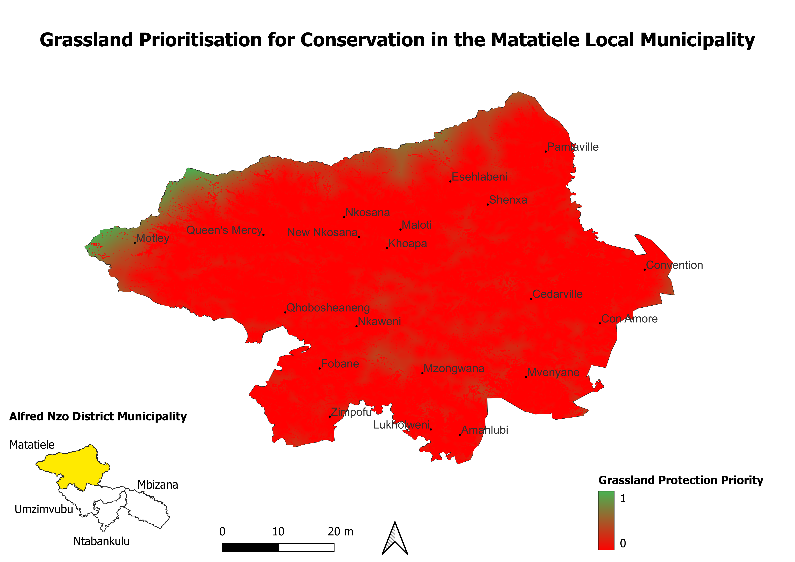
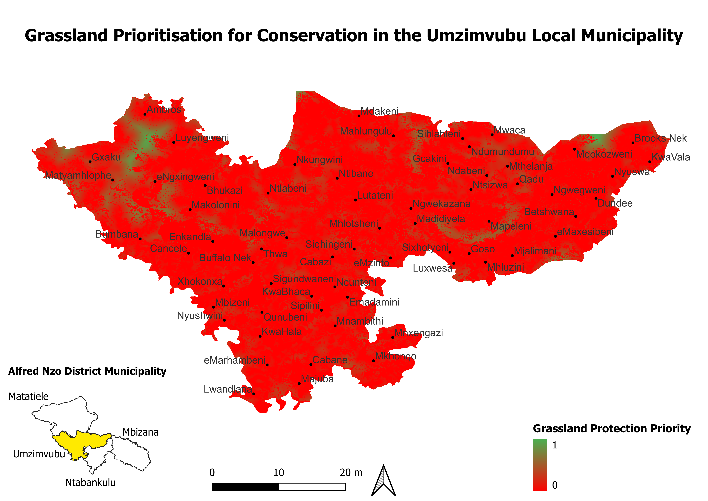

Prioritization of Grasslands in Alfred Nzo (2022)
Objective
To identify and prioritize grassland areas most at risk from human activity (built-up and cultivated land)
using the 2022 National Land Cover dataset in QGIS. The results will support local biodiversity conservation
and land-use planning.
Method Summary
- Extracted grassland, cultivated, and built-up areas from the 2022 SA Land Cover raster
- Reclassified cultivated and built-up into binary rasters
- Used the Proximity (Distance) tool to generate distance rasters
- Summed the distances and masked with grassland
- Normalized the result from 0 (high risk) to 1 (low risk)
- Final raster styled with red–green ramp for visual clarity
Focus Area
Alfred Nzo District Municipality, Eastern Cape
Tools Used
- QGIS 3.42.3 (Münster)
- Raster Calculator
- Proximity (Distance) Tool
- SA National Land Cover 2022 dataset
- SA Administrative Boundaries
- Google Earth (for place names)
Map Outputs

